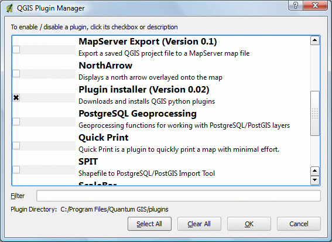
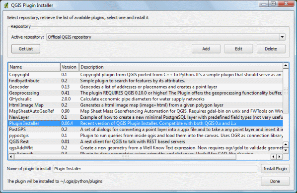
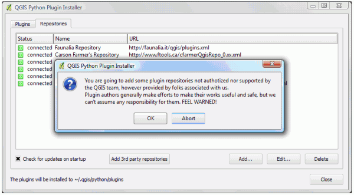
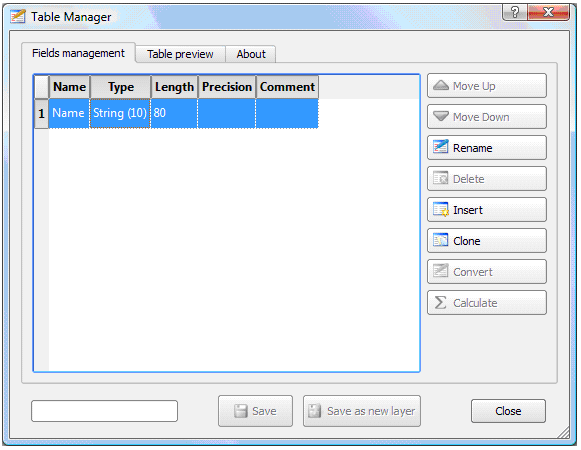

Обход ограничения на работу с полями атрибутивных таблиц shape-файлов в QGIS
Описание проблемы и инструмента для ее решения
Прозрачная работа с различными векторными форматами данных в QGIS осуществляется засчет специальной библиотеки абстракций OGR. Помимо возможностей, добавляемых этой прослойкой, она также накладывает и некоторые ограничения. Например, драйвер формата shape, включенный в OGR, не позволяет модифицировать существующий DBF, являющийся частью shape-файла и хранящий атрибутивную информацию. Эта проблема не стоит если используется другой формат хранения данных, например все хранится в базе PostGIS/PostreSQL, однако, распространение этого формата и легкость его использования (при всей его мощности), пока гораздо ниже привычного формата shape.
На практике это означает, что встроенный в QGIS редактор таблиц атрибутов не позволяет добавлять новые и удалять имеющиеся поля созданного ранее shape-файла, однако это ограничение можно обойти, установив специальное расширение. Для установки расширения в меню Plugins выберем Plugin Manager. В открывшемся окне отметим Plugin Installer и нажмем ОК.

Менеджер расширений QGIS
Снова заходим в меню Plugins, выбираем Plugin Installer и выбираем Install plugins. Убждаемся, что выбран репозиторий Official QGIS repository и нажимаем кнопку Get List. В списке доступных расширений выбираем Plugin Installer и жмем Install Plugin, тем самым устанавливая новую версию установщика расширений, который заменит текущий.

Выбор свежей версии установщика расширений

Сообщение об успешном завершении установки установщика расширений
Если вы видите это сообщение, значит, установка новой версии установщика расширений прошла успешно, жмем ОК и перезапускаем QGIS. В меню Plugins выбираем Fetch Python Plugins, в открывшемся окне переходим на вкладку Repositories и жмем Add 3rd party repositories. В открывшемся окне жмем ОК, соглашаясь с тем, что добавляемые репозитории не являются авторизованными.

Добавление репозиториев, содержащих программы авторов, не входящих в команду разработчиков QGIS
Переходим на вкладку Plugins и в списке загруженных расширений выбираем Table Manager и жмем Install plugin. В случае успешного завершения установки выскочит окошко, оповещающее об этом (Рисунок 2.6).

Сообщение об успешном завершении установки установщика расширений Table Manager
C помощью менеджера расширений включаем Table Manager, после чего он становится доступным из меню Plugins. Запускаем его. Перед нами открывается окно в котором можно производить операции добавления новых и удаления имеющихся полей таблиц атрибутов shape-файлов.

Окно расширения Table Manager.
Автором расширения Table Manager Plugin является польский разработчик Borys Jurgiel (borys@wolf.most.org.pl). Это расширение не позволяет вносить изменения непосредственно в редактируемую таблицу, вместо этого создается новый shape-файл с прежними пространственными данными, таблица атрибутов которого заменяется на отредактированную. Обновление непосредственно редактируемой таблицы планируется в следующей версии расширения.
Ссылки по теме
Дата создания: 27.09.2008
Автор(ы): Денис Рыков